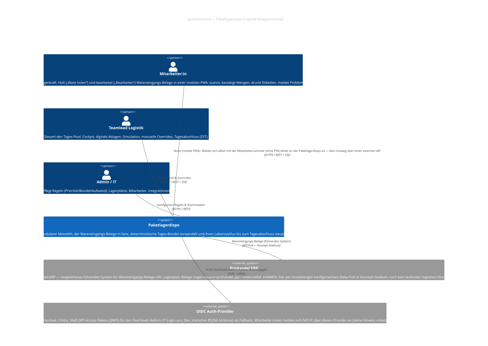
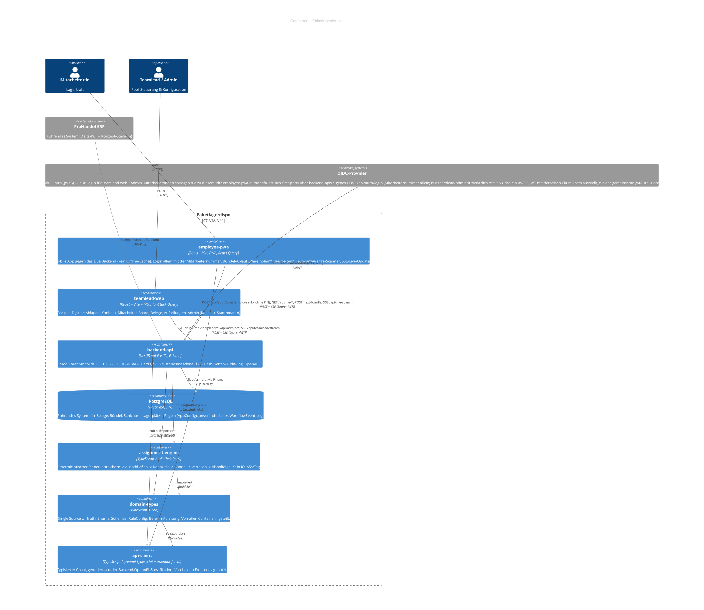

A C4 model (Simon Brown) of the warehouse goods-receipt distribution system, plus a
type/domain model. Every diagram is derived from and verified against the actual
code on branch main (apps/* and packages/*). Diagrams-as-code with
Mermaid; sources in src/*.mmd, rendered SVGs in
rendered/.
Levels: 1 Context → 2 Container →
3 Component (backend, engine, both frontends) →
4 Code (engine pipeline), plus a Domain/ER model and the
type-generation chain. Regeneration: see README.md /
./render.sh.
The system in its environment. Actors: Mitarbeiter:in,
Teamlead, Admin/IT. External systems:
ProHandel ERP (intended system of record; delta-pull is concept-stage —
cases carry source=prohandel_api + externalRef) and the
OIDC provider (JWKS; dev RS256 key fallback).

Deploy/runtime units: the two React frontends (employee-pwa, teamlead-web), the backend-api (NestJS on Fastify, Prisma), PostgreSQL, and the shared library packages (assignment-engine, domain-types, api-client). Protocols: REST + SSE (Bearer JWT), Prisma/SQL, in-process library calls. (Caddy/Redis/MinIO exist in the infra baseline but are not wired by current backend code.)

NestJS modules: Cases (Me/Cases/Teamlead controllers + services),
Assignment (recalculate / assignNextBundle /
preview), Employees, Admin (RuleConfig in the
AppConfig singleton + Lagerplätze), and the cross-cutting globals
Auth (OIDC/RBAC), Prisma, Events
(hash-chain audit), Workflow (state machine), Live (SSE).

The pure, deterministic planner package. Orchestrator assignWork() in
assignment/plan.ts drives the sub-modules: priority, effort, capacity, reserve,
bundling, distribute and pickup. No IO; runs in <5s for a typical day.

Offline-first PWA. Screens drive the COLLECT → PROCESS → DONE flow via the
useBundle / useCaseFlow hooks and workflowModel guards.
The db/ layer is Dexie v4 with optimistic-lock repository, pull-based
sync (loadAssignedWork, pullNextBundle) and an offline seed.

Cockpit SPA. Features (cockpit, ablagen, board, belege, split, admin) consume a single
useCockpitData() store (TanStack Query) that wraps remoteDataset,
mutations and the typed api-client. Case actions flow through the
single-source caseActions registry into the mandatory ReasonDialog.

The data flow inside assignWork():
enrich → exclude → capacity → reserve → bundles → distribute → pickup,
mirroring the step ordering in assignment/plan.ts.

The Prisma entities and their relations/cardinalities. The
Warenbezeichnung model (ASN/DESADV) is reflected: Beleg-Kopf fields
(Filiale, Lieferschein, Abschnitt, Warenart) live on GOODS_RECEIPT_CASE;
article identity / NOS / Saison live on RECEIPT_POSITION. Config tables
(AppConfig, LoadPlanRule, PriorityRule, EffortRule) and the immutable
WORKFLOW_EVENT log are standalone.

How types stay in sync: @paket/domain-types (Zod, single source) feeds backend
DTOs; @nestjs/swagger + the DB-less openapi:generate emit
openapi.json; openapi-typescript generates
api-client/src/generated/schema.ts for the openapi-fetch client;
a drift test guards spec ↔ client. Prisma generates its own client for backend-internal use.
